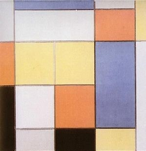

-- Under Construction --
Additional projects such as Java transit application and C++ image manipulation are temporarily lost on school severs.
Python - Experimental Neural Network
This was an exploratory project to learn about the fundamentals of Neural Networks - We attempted to design a maze solving network with moderate success. This was a self-guided study of network designs and applications inspired by a 2019 blog post along with a 2015 article titled A Neural Network in 11 lines of Python. We first designed a trivial 2-layer network to determined whether a 3x3 maze had a solution - functionally, this networked was simply a library of solvable mazes, but it allowed us to visualize learning speeds and different activation functions. We then designed a slightly more complex network which, given a maze of any size, could determine a solution path by estimating the best possible move from any given tile. Despite the fact that Machine Learning is notoriously bad at maze solving, our network was able to solve mazes with up to 85% accuracy. This project taught us about backpropagation, data representations, over-training and many other basics of machine learning. This was a term project for COGS 301 at the University of British Columbia done in collaboration with Isabel Zorrilla.
Github PresentationHaskell - Random Mondrian Art

We explored the feasibility of using a functional programming language such as Haskell to create personal and creative artwork. Based off of Dr. Ben Stephenson's Mondrian Art project, we used Haskell to implement a recursive algorithm that outputs Mondrian-style art. Users are asked to pick a colour palette, the program allows for different strategies for creating shapes and sizes to reflect the user's artistic creativity, so that the user can create, interact with, and view their own unique artwork. This was a term project for CPSC 312 at the University of British Columbia done in collaboration with Myla White.
GithubProlog - Crime Solver

We designed a simple "crime solver" using the functional programming language Prolog. Given witness testimony and crime data, we can determine who is responsible for a particular crime. We used Prolog's JSON libraries in order to download actual crime data from the city of Vancouver's Open Data Catalogue for Crimes in 2018, and by parsing this data we were able to determine who was guilty based off of crime data such as:
- The type of crime committed
- Suspect alibis
- Evidence found at the scene of the crime
- Inconsistencies in suspect/witness testimonies
Github